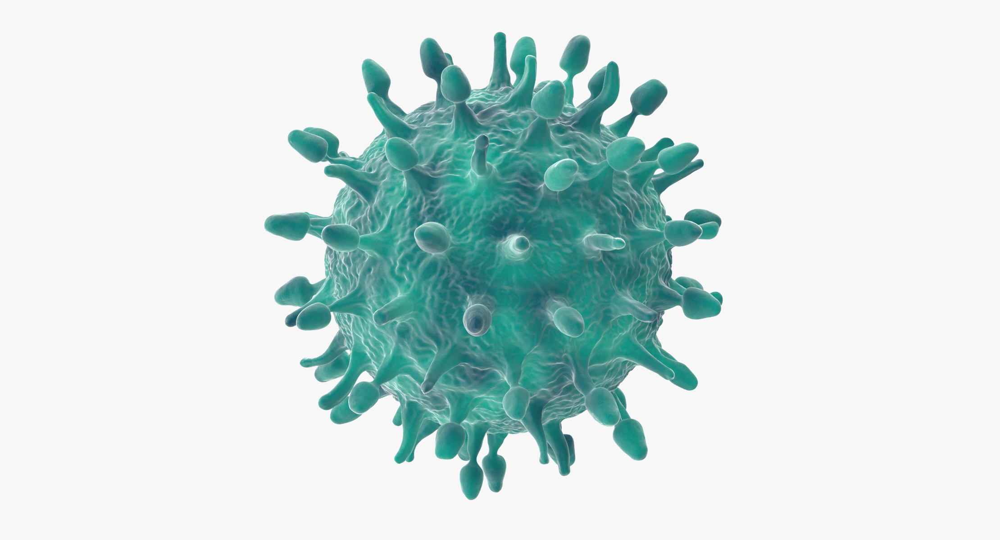
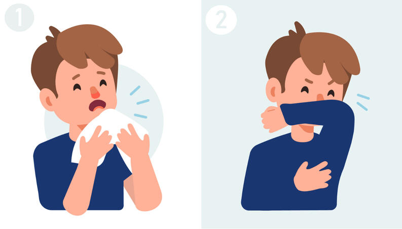
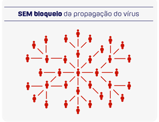
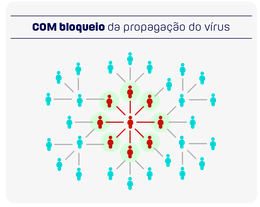
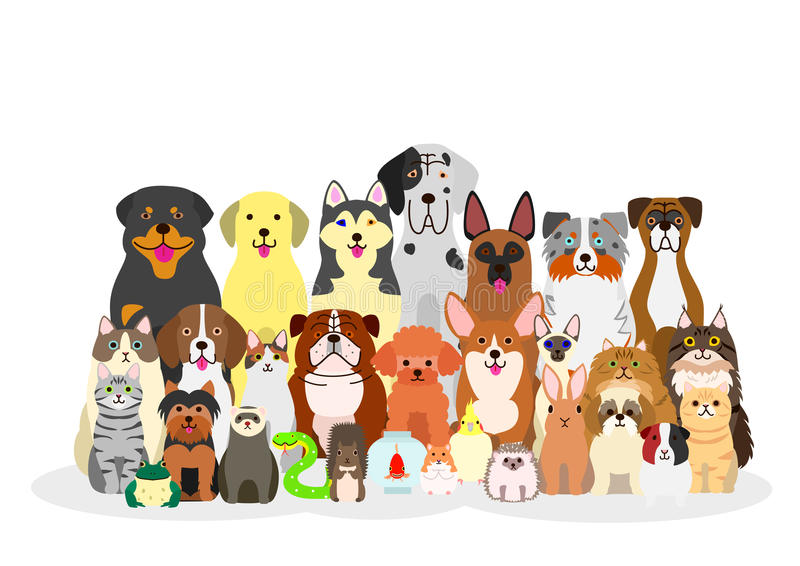
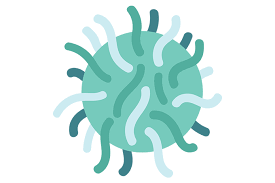

ACREDITAMOS QUE CUIDAR DA SAÚDE, NÃO PRECISA SER CARO NEM COMPLICADO
Equipe UNIexame - 03/04/2020 - 4 minutos de leitura
Compartilhe:
O que é o corona vírus?
O Coronavírus, causador da pandemia global, pertence a uma família de vírus (CoV) que já circula no Brasil. Os
vírus dessa família podem causar desde resfriados comuns a doenças mais graves, como a Síndrome Aguda
Respiratória Severa (SARS) e a Síndrome Respiratória do Oriente Médio (MERS).
O Novo Coronavírus recebeu a denominação SARS-CoV-2 pela Organização Mundial da Saúde (OMS) e a doença que ele
provoca tem a denominação COVID-19.

Qual a origem do vírus e como foi transmitido para o humano?
As análises iniciais indicam que o vírus da COVID-19, que vive em morcegos da China, passou por um hospedeiro
intermediário e sofreu mutações para conseguir sobreviver no corpo humano, tendo seus primeiros casos em pessoas
que frequentavam o Mercado de Wuhan. Os estudos continuam para saber como ocorreu e como passou a ser
transmitido para outros seres humanos.
Como se transmite o novo Coronavírus?
A principal forma de transmissão do novo Coronavírus é entre pessoas. Por meio de espirros, tosses ou até mesmo
a fala, pessoas infectadas expelem gotículas de saliva e secreções que contém o vírus. Essas pequenas gotas
podem contaminar superfícies e objetos e, posteriormente, infectar pessoas que tocaram nesses locais e levaram
as mãos aos olhos, nariz e boca.

Devo usar uma máscara para me proteger?
Pessoas sem sintomas respiratórios, como tosse, não precisam usar máscara médica. A OMS recomenda o uso de
máscaras para pessoas com sintomas de COVID-19 e para aqueles que cuidam de pessoas com sintomas, como tosse e
febre. O uso de máscaras é crucial para os profissionais de saúde e as pessoas que cuidam de alguém (em casa ou
em um estabelecimento de saúde).
A OMS recomenda o uso racional de máscaras médicas para evitar o desperdício desnecessário de recursos preciosos
e o uso indevido de máscaras. Use uma máscara somente se você tiver sintomas respiratórios (tosse ou espirro),
suspeitar de infecção por COVID-19 com sintomas leves ou se estiver cuidando de alguém com suspeita de infecção
por COVID-19. Uma suspeita de infecção por COVID-19 está ligada a viagens em áreas onde os casos foram
relatados, ou contato próximo com alguém que viajou nessas áreas e ficou doente.

A COVID-19 deixa sequelas?
Ainda não há estudos clínicos embasados que comprovem a existência de sequelas em pacientes que foram infectados
pelo novo Coronavírus. Com base em estudos de outras infecções virais similares e mesmo sobre outros tipos de
Coronavírus, sabemos que as chances de sequela são bastante reduzidas.
Quem possui mais risco de desenvolver doenças graves?
Ainda estamos aprendendo sobre como o COVID-2019 afeta pessoas, idosos e pessoas com condições médicas
pré-existentes (como pressão alta, doenças cardíacas ou diabetes), no entanto, o vírus parece desenvolver
doenças graves com mais frequência nesses grupos.
Quanto tempo dura o período de incubação da COVID-19?
Ainda estamos aprendendo sobre como o COVID-2019 afeta pessoas, idosos e pessoas com condições médicas
pré-existentes (como pressão alta, doenças cardíacas ou diabetes), no entanto, o vírus parece desenvolver
doenças graves com mais frequência nesses grupos.
Existe uma vacina, medicamento ou tratamento para o COVID-19?
Ainda não. Até o momento, não há vacina nem medicamento antiviral específico para prevenir ou tratar o
COVID-2019. No entanto, as pessoas afetadas devem receber cuidados para aliviar os sintomas. Pessoas com doenças
graves devem ser hospitalizadas. A maioria dos pacientes se recupera graças aos cuidados de suporte.
Possíveis vacinas e alguns tratamentos medicamentosos específicos estão sob investigação. Eles estão sendo
testados através de ensaios clínicos. A OMS está coordenando esforços para desenvolver vacinas e medicamentos
para prevenir e tratar o COVID-19.
As maneiras mais eficazes de proteger a si e aos outros contra a COVID-19 são limpar frequentemente as mãos,
cobrir a tosse e manter uma distância de pelo menos 1 metro de distância das pessoas que estão tossindo ou
espirros.
Posso pegar o COVID-19 do meu animal de estimação?
Não. Não há evidências de que animais de companhia ou animais de estimação, como gatos e cães, foram infectados
ou podem espalhar o vírus que causa o COVID-19.

Quanto tempo o vírus sobrevive nas superfícies?
Não é certo quanto tempo o vírus que causa a COVID-19 sobrevive na superfície, mas parece se comportar como
outros coronavírus. Estudos sugerem que os coronavírus (incluindo informações preliminares sobre o vírus
COVID-19) podem persistir nas superfícies por algumas horas ou até vários dias. Isso pode variar sob diferentes
condições (por exemplo, tipo de superfície, temperatura ou umidade do ambiente).
Se você acha que uma superfície pode estar infectada, limpe-a com um desinfetante simples para matar o vírus e
proteger a si e aos outros. Limpe as mãos com um produto à base de álcool ou lave-as com água e sabão. Evite
tocar nos olhos, boca ou nariz.

Quais são os sintomas do coronavírus?
O coronavírus pode causar infecções respiratórias desde um simples resfriado até uma pneumonia severa. Isto vai
depender de vários fatores como idade e imunidade.
Os vários tipos do coronavírus causam doenças respiratórias e a forma mais eficaz de identificar a infecção pelo
vírus é procurar um médico assim que os sintomas se manifestarem.